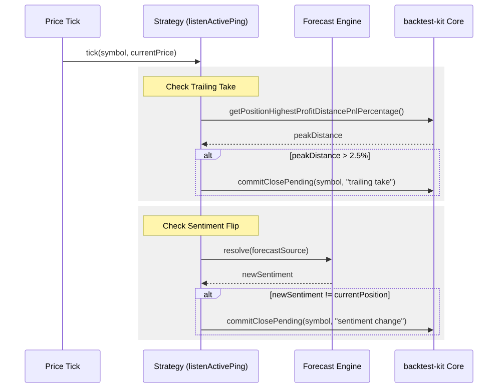

This page documents the lifecycle of trading positions within the feb_2026_strategy, covering the transition from signal generation to final closure. It details the three primary exit mechanisms: trailing take-profit, hard stop-loss, and sentiment-driven reversals.
Positions are initialized via the getSignal function within the strategy schema. The system uses a "moonbag" configuration which sets up a position with a defined stop-loss but relies on dynamic logic for profit taking.
The Position.moonbag utility creates a signal with:
POSITION_LABEL_MAP.HARD_STOP constant (default 3.0%).minuteEstimatedTime is set to Infinity, meaning the position will not expire due to time and must be closed by price action or logic.Every generated signal includes a note containing the LLM's reasoning and a link to the source news. This note is persisted with the trade record for auditability.
The strategy monitors active positions through the listenActivePing hook, which executes on every price tick for currently open trades.
The system continuously re-evaluates the market sentiment. If the LLM forecast changes its sentiment (e.g., from bullish to bearish), the strategy triggers an immediate market close.
forecastSource and compares the new position recommendation against the data.position of the active trade.commitClosePending is called.not_reliable, the exit is suppressed.Instead of a fixed target price, the strategy uses a trailing mechanism to capture extended trends.
currentProfit > 0).TRAILING_TAKE is set to 2.5%.getPositionHighestProfitDistancePnlPercentage. If the price retraces by more than the TRAILING_TAKE value from that peak, the position is closed.A safety net handled by the backtest-kit core engine.
Value: 3.0% distance from entry.
Priority: Stop-loss checks have priority over activation and other logic to ensure capital protection.
The following diagram illustrates how the strategy logic interacts with the backtest-kit framework entities to manage the lifecycle.
Title: Strategy Logic to Code Entity Mapping

* *The lifecycle follows a strict state machine managed by the framework.
| State | Description | Transition Trigger |
|---|---|---|
| Idle | Waiting for signal | getSignal() returns non-null |
| Opened | Entry triggered | Automatic next-tick transition |
| Active | Monitoring exits | TP, SL, or commitClosePending |
| Closed | Terminal state | Exit logic completed |
Title: Position Exit Execution Flow

* *In specific test scenarios (e.g., feb_2026.test.ts), the exit logic can be modified via global configuration:
CC_MAX_STOPLOSS_DISTANCE_PERCENT: Set to 100 (effectively disabled) in some backtests to allow logic-only exits.
NEVER_HARD_STOP: A local constant used to simulate positions without stop-losses.